| 日付 | 2026年8月2日（日） |
|---|---|
| 山域 | 赤城・榛名 |
| メンバー | 家族（妻） |
| 山行形態 | 日帰り |
| アクセス | 車 |
| ルート (Map) | 花見ヶ原森林公園 (7:47) - (9:43) 分岐点 - (9:49) 赤城山 (10:10) - (10:46) 駒ヶ岳 (11:07) - (11:40 分岐点 - (13:09) 花見ヶ原森林公園 |
今回は妻に山を選んでもらった。目的地は赤城山。
前回来たときは、まだ子供が小さかった11年前。
その時は西側から登ったので、今回は東側から登ってみることにする。
花見ヶ原森林公園の第二駐車場に車を停める。標高1180m。
登山客は第二駐車場に停めるように書かれていたが、こちらは車が全くない。
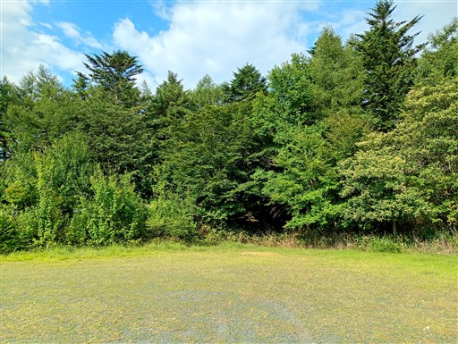
登山開始。
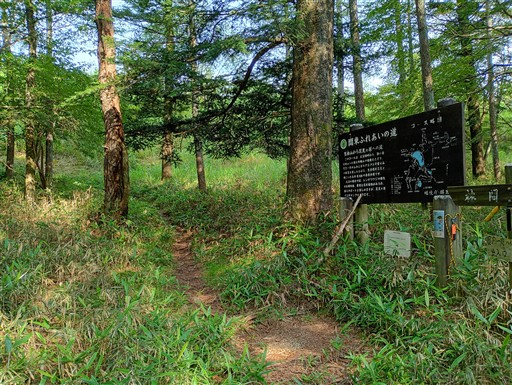
このフェンスは何だろう。中に薮に埋もれた構造物が見える。
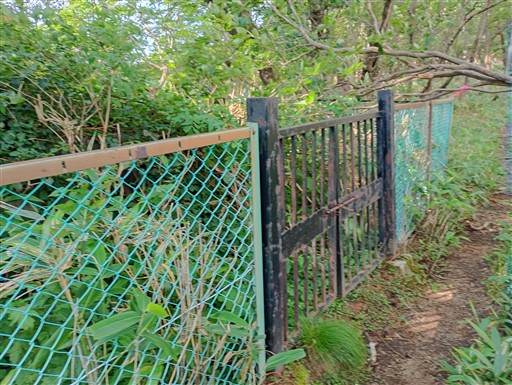
笹原広がる傾斜の緩い登山道が続く。
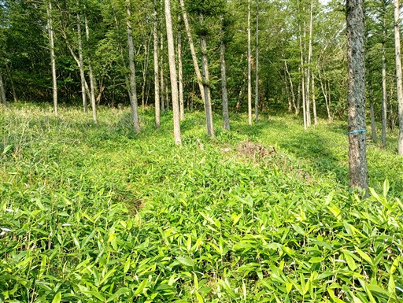
石だらけの場所が出てくる。
この辺りは登山道が大きく蛇行しているが、笹原ばかりだとつまらないので、
こちらの方に迂回させているのだろうか？
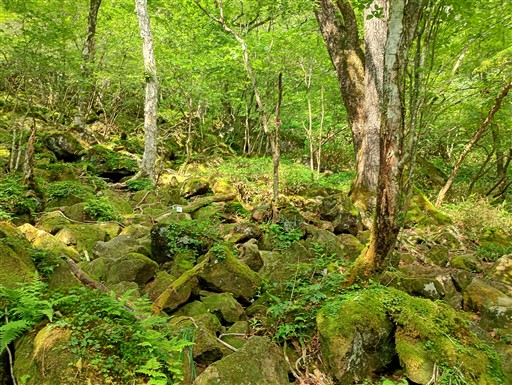
再び笹原に戻ってくる。
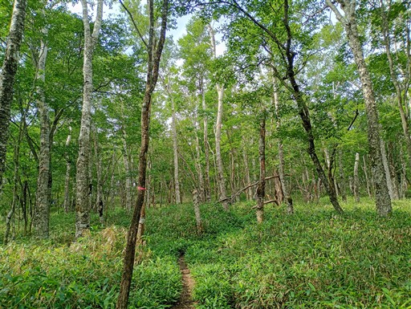
途中から木道が現れる。
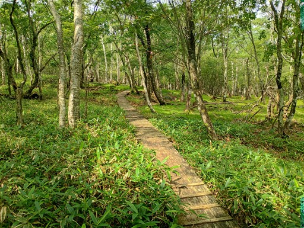
木段の上にトンボがたくさん休んでいる。木が温かいからだろうか？
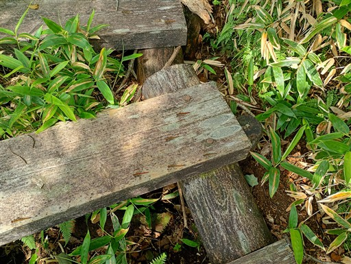
かなり傷んだテーブルベンチ。
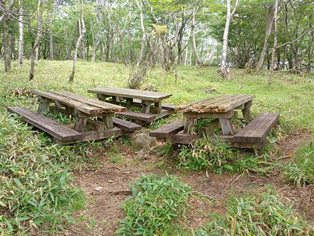
マルバダケブキの蕾。
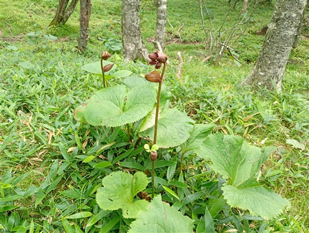
この辺りは少し笹が濃い。あまり歩かれないルートのようだ。
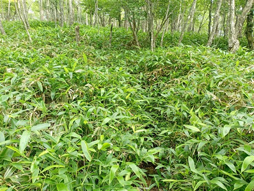
稜線に到着。
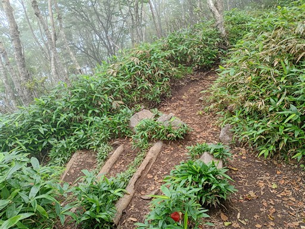
歩いてすぐに神社がある。
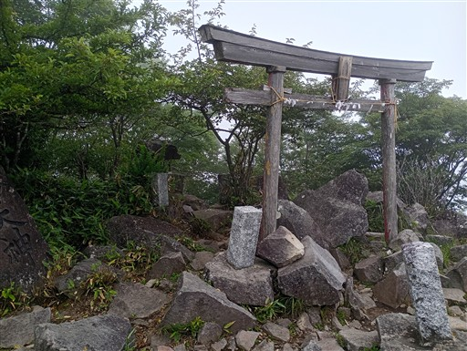
赤城山に到着。標高1828m。
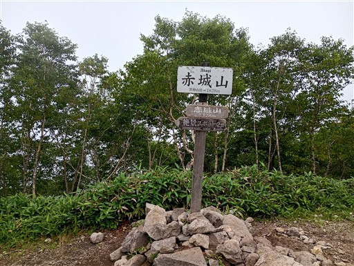
天気は悪いが、それなりに登山者はいる。さすがは人気の山だ。
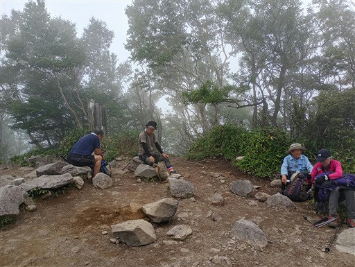
展望がない事は分かっているが、一応展望台に寄り道しておく。
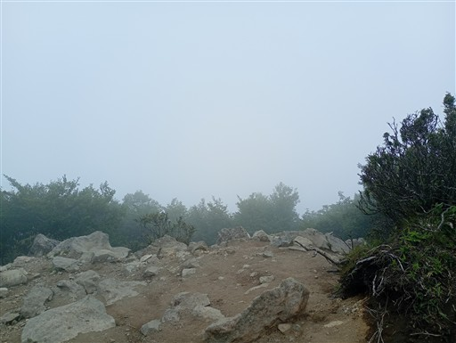
そのまま下山しても良かったのだが、運動のため駒ヶ岳を往復することにする。
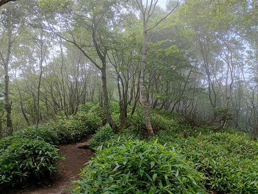
かなり下った鞍部の辺り。雰囲気の良い場所なので多くの人が休んでいる。
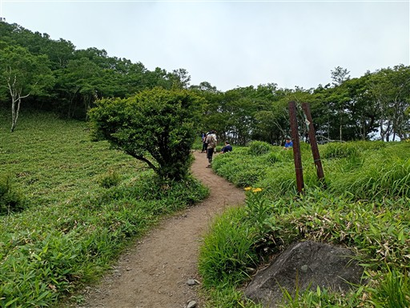
一登りで駒ヶ岳に到着。標高1685m。
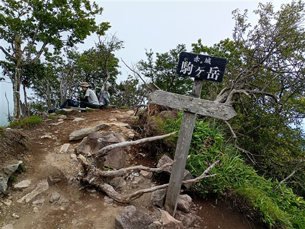
意外にこちらからは展望が広がる。辛うじて大沼が見えている。
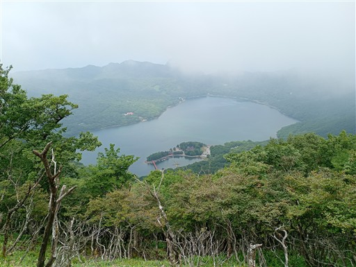
反対側の展望。こちらも一応、視界が広がる。
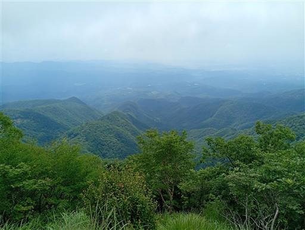
山頂にある箒。落葉掃除のため？
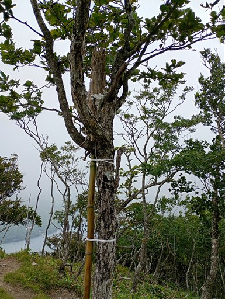
分岐点に戻ってくる。登り返しが結構きつかった。
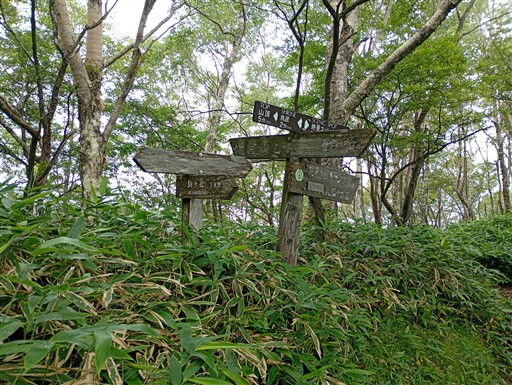
ここからは緩やかな傾斜の道をダラダラと下っていく。
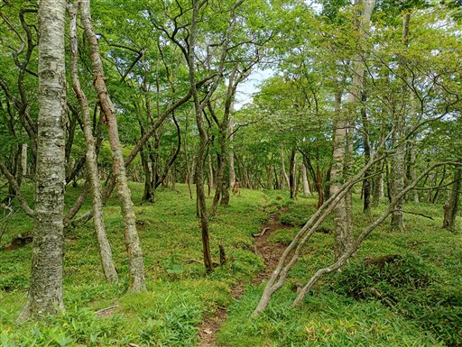
美しい森。若干、青空が覗いている。
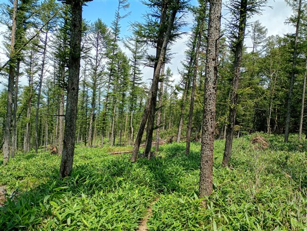
分岐点があり、右から来たので左に行ってみることにする。
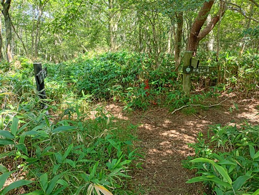
こちらの道は失敗だったよう。
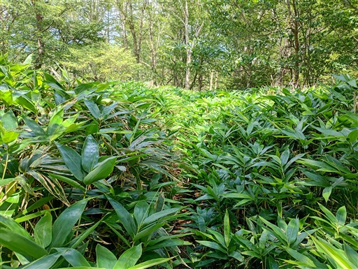
キャンプ場に下山してくる。
天気予報が悪い中での登山だったが、いくらかの展望が得られたし
比較的涼しい中での快適な登山ができた。
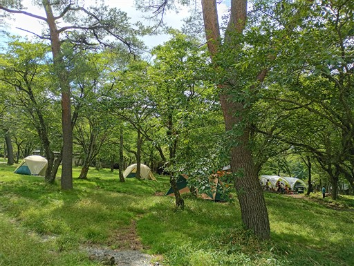